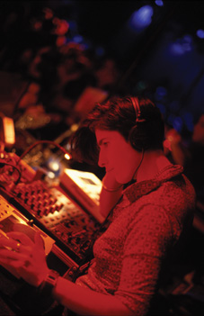

| Juni 2005 |

Flydende grænserIpek dyrker forskellige identiteter. ”Både tyskere og tyrkere synes, at det at være homo mest er en vestlig livsstil. For mig er det naturligt,” fortalte hun til Panbladet, da vi talte med hende først i maj. Da var hun i København for at optræde som dj til dunst-festen Habibis Exil.
Ipek er berliner til benet. Hun flyttede til byen med sine forældre som 10-årig og kunne ikke drømme om at bo andre steder i Tyskland. ”I Köln og Hamburg er der også gode indvandrerscener. Men i Berlin kan man have så mange forskellige identiteter og dyrke dem alle. Der er gode tyrkiske samfund, gode lesbiske samfund og gode queersamfund,” fortæller Ipek til Panbladet.
Og netop forskellige identiteter er en stor del af Ipeks virke. Hun er uddannet i socialpædagogik og har skrevet afhandling om det at være lesbisk og tyrker. Er det et paradoks? ”Nej,” mener Ipek, ”det er en fordom. Mange tyrkere synes ikke, at man kan være lesbisk med en muslimsk baggrund. Både tyskere og tyrkere synes, at det at være homo mest er en vestlig livsstil. For mig er det naturligt.”
Ipek sprang ud i en alder af 18. Hun var opsat på at møde
andre tyrkiske lesbiske, men fandt ud af, at der ikke var et forum i Berlin
for dem at mødes i. ”Jeg lavede så en gruppe, kun for
lesbiske tyrkere. Jeg var ikke interesseret i arabiske eller tyske lesbiske.
Eller bøsser for den sags skyld. Kun lesbiske tyrkere”. Ipek
griner. ”Jeg ville finde mit eget ståsted først. Så
for ti år siden ville jeg ikke have lavet politisk arbejde med bøsser,
men det gør jeg nu, fordi jeg er blevet sikker på min egen
identitet.”
Musikken som samlingspunkt
Ipek startede med at dj´e af lyst, men sådan set også af nød. Igen var der et tomrum som hun følte, at hun kunne udfylde. ”Der var så mange fester i Berlin, men der var ikke noget sted hvor homoseksuelle tyrkere kunne danse til vores egen musik. Vi kunne gå til den tyrkiske hetero-scene hvor vi ikke var accepterede som homoer, eller vi kunne gå til homo-scenen, hvor der ikke blev spillet tyrkisk musik. Så igen tænkte jeg, hvorfor opfinder vi ikke vores egen scene?”
Ipek var med til at opstarte den homo-tyrkiske club Gayhane i Berlin for 7-8 år siden. ”Før Gayhane skulle man kigge med en lup efter tyrkiske homoarrangementer, men nu er der masser. Og de fester er også en form for spring-ud hjælp. Specielt de lesbiske er ikke så politisk-aktivistisk orienterede som bøsser. Men gennem musikken kan man nemmere nå folk.”
Og målgruppen er større end bare tyrkere når Ipek
står bag pladespilleren. ”Når jeg spiller til tyrkiske
fester, er der tit også kurdere. Og jeg spiller også til bredere
orientalske fester, som her i København til Habibis Exil. Så
jeg spiller naturligvis også kurdisk, indisk, jugoslavisk, arabisk
og alt muligt andet musik. Der er nogle konstruerede grænser lande
og kulturer imellem, og det giver ingen mening for mig at holde fast på
dem. Alle skal føle sig hjemme, og det gør folk tit hvis
de hører musik på deres eget sprog. Jeg begyndte at spille
musik for at lave vores eget rum, men selv inde i det rum er der jo mange
forskellige identiteter.”
Homo-etnisk synlighed
Da jeg spørger til samarbejdet mellem dunst og Ipek, springer Jørgen Callesen – også kendt som miss fish - ind og forklarer. ”dunst har altid været en gruppe for minoriteter indenfor minoriteten. Vi havde kontakt til transvestitter, transseksuelle og andre homoer, der følte sig som outsidere. Men en gruppe vi aldrig fik fat på, var den etniske. Vi så dem ikke til vores fester, men vi vidste, at de var der. Så vi havde et mål at kommunikere et fællesrum, men vi vidste ikke hvordan vi skulle gøre det. Og jeg havde så været til Gayhane og set Ipek der, og tænkte at det kunne være en god idé at få hende herop.” Habibis Exil var i sin tid tænkt som et samarbejde mellem dunst og den homo-etniske gruppe Salon Oriental. Men en del af Salon Orientals medlemmer syntes at dunsts image var for avantgarde, så det blev ikke et decideret samarbejde. Men nogle medlemmer hjalp dog til.
Selvom dunst-festen blev en succes, påpeger Ipek vigtigheden af selv at tage initiativer som minoritetsgruppe. ”Indenfor det etniske homo-miljø er der en masse forskellige identiteter. Man har brug for at diskutere emner som ens forhold til sin etniske kontra danske baggrund, åbenhed overfor familien og så videre. De ting er vigtige at tage op og det kan være svært at gøre i et regi der er styret af tyskere, eller danskere i dette tilfælde.” miss fish nikker samstemmende. ”Det var også vores konklusion. Vi er erfarne organisatorer. Og de folk der var til stede fra Salon Oriental, kunne se hvordan vi laver en fest.. Forhåbentlig tager de så selv idéen op og skaber deres eget rum. Og de kan naturligvis altid komme og bede os om hjælp med det praktiske, hvis de får brug for det.”
Ipek smiler og nikker. ”Til festen var der et par lesbiske tyrkere,
der bad om mit kort og spurgte, om jeg ville spille til deres fest hvis
det blev aktuelt. Så når de ser dunst arrangere sådan
en fest og at det fungerer, der kommer mange mennesker, så skaber
det en entusiasme til selv at gå i gang.”
Diskriminering og intolerance
Selvom Ipek elsker at bo i Berlin, er hun bekymret over den politiske situation i Tyskland i øjeblikket. ”Generelt har stemningen omkring indvandrere ikke været så slem i Tyskland de senere år. Men i forbindelse med EU-debatten om Tyrkiet er der virkelig blusset en anti-tyrkisk, anti-muslimsk stemning op. Emner som unge kvinders tørklæder og arrangerede ægteskaber fylder pludselig det hele. Det føles som om alt det fremskridt der er blevet gjort gennem de sidste 15 pludselig er væk. For eksempel er der indført en regel om at ikke-amerikanske, ikke-europæiske statsborgere kun må have ét pas. Så hvis man vil have sit tyrkiske pas, må man opgive sit tyske. Det er ren diskrimination.”
Og det politiske aspekt spiller også en stor rolle for dunst, påpeger
Miss Fish. ”Vi ved ikke om vi skal holde flere orientalske fester.
Vi kan godt lide at variere vores fester. Men jeg synes, at det er et
utroligt vigtigt emne at sætte fokus på, specielt i Danmark
fordi vi har en højreorienteret regering. Niveauet hvorpå
emner som tolerance og etnicitet bliver diskuteret i offentligheden er
meget lavt og uartikuleret. Og medierne gør ikke noget for at hæve
det. Stereotyper og klichéer lever så stærkt her, og
det truer også os, fordi minoriteter laver grupper indenfor minoriteter.
Mange transvestitter kan for eksempel ikke lide arabiske mænd, fordi
de kan være aggressive overfor kvinder. Men det kan en hvilken som
helst anden mand jo også. Så emnet er vigtigt.”
Drag for sjov
Ipek optræder til tider også som den tyrkiske familiefar Mehmet. Han har tre koner og fem børn. Han bor i Berlin for at tjene penge, som han sender hjem til familien i Tyrkiet. Han bor sin gode ven Hassan. De deler seng for at spare penge. Men de er ikke bøsser. Slet ikke! Ipek griner når hun fortæller om sit alter ego. I modsætning til mange dragkings, og til Ipeks andre aktiviteter, siger hun selv, at der intet politisk aspekt er når hun klæder sig ud som mand. ”Der er rigtig mange gode dragkings i Berlin, men ingen tyrkiske. Så jeg tænkte, at nu skulle det være. Men jeg har aldrig identificeret mig som dragking. Det er nærmest en parodi, jeg overdriver og benytter mig af humoren i det.” Ipek har optrådt med Mehmet til Gayhane og syntes, at reaktionerne var interessante. ”Selvom Gayhane er et homo-arrangement kommer der også en del heteroer. Og jeg kom så klædt ud som en 50-årig familiefar. Både mændene og kvinderne kiggede, og både heteroerne og homoerne. Jeg var ikke sikker på om de kunne lide det eller ej, men heteromændene virkede lidt intimiderede.”
At erobre verden Ipek har rejst over hele verden med sin musik, for eksempel
har hun netop været i Mali og spille. ”Det var en festival
midt ude i Sahara-ørkenen. Det var en fantastisk oplevelse, og
første gang jeg har været i Afrika. Det er altid fedt at
komme sådan nogle steder på en anden måde end hvis man
bare var turist.” Sommeren over skal Ipek til Sverige og Spanien
med en musik- og performancegruppe som hun optræder med. To af de
mandlige tyrkiske dansere i gruppen optrådte også til Hababis
Exil, men ud over dem er der også en tysk vj, en amerikansk sangerinde,
en brasiliansk trommeslager, en tysk dj og en libanesisk musiker. En ”trash
gender bending fun group” som hun beskriver dem. Da jeg slutter
af med at spørge hende, om hun har nogle mere langsigtede planer
for karrieren, griner hun og svarer; ”at blive meget berømt
og tjene en masse penge!”
Ipek er fotograferet af Christian Vagt
Forf. Sissel Thomsen
http://www.panbladet.dk/artikel/332
Print denne side